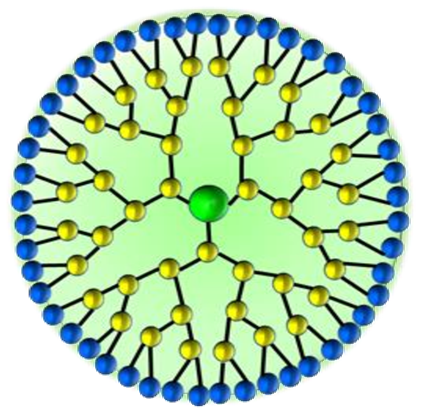
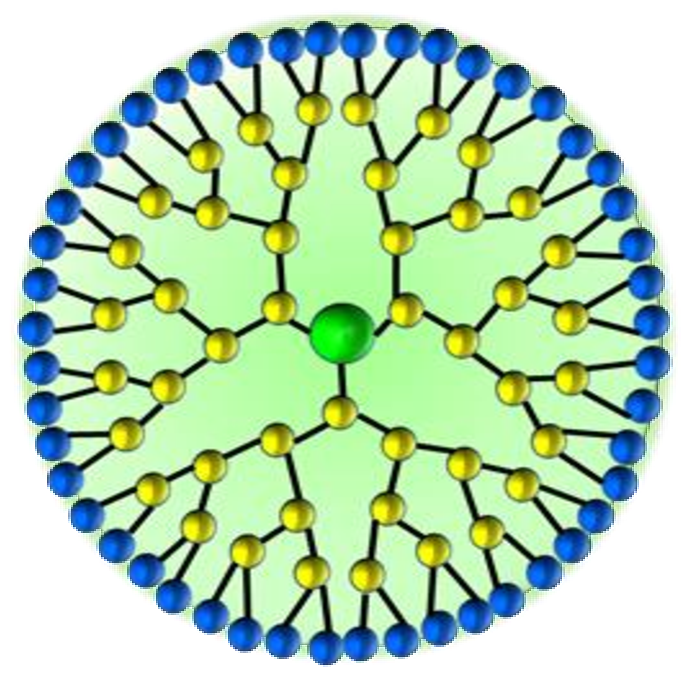

Nanomaterials are materials that have at least one dimension that can be measured at the nanoscale. These materials can be manufactured or found in nature. The broader category of nanotechnology can be broken down into four main types:
Carbon-based nanomaterials includes carbon nanotubes created through carbon-based vapor deposition, where heated carbon is added after a reaction between a surface and a catalyst.
Metal-based nanomaterials includes quantum dots, which are developed by growing nanoscale crystals of two different elements in a solution under specific conditions.
Dendrimers exist as nanoparticles that consist of a core, inner shell and outer shell and can be constructed starting from the core or outer shell.
Nanocomposites are composed of either multiple nanomaterials or a mix of nanomaterials and larger materials, forming stronger metals, plastics and other substances.
 
